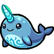

 WaterIce
WaterIceTap a stage to read its story.
Glaclet is an adorable plump blue narwhal calf with wide friendly eyes and a short spiral horn on its forehead, its belly patterned with soft swirl markings. It floats through the murky surface channels of the Poison Marsh, tapping its horn against submerged branches to test them. The light tapping makes a sound that carries through the water and attracts other Glaclet, so they travel in cheerful bumbling groups. Their presence keeps the marsh water slightly cleaner than it should be - their horns somehow neutralise small amounts of toxin on contact.
Field note: Glaclet always taps three times before swimming through any new gap - once for depth, once for width, once for luck.
Poison Marsh. Glaclet and its family are found in the Poison Marsh. See everyone who lives there.
Share a Bond Food that matches its types to become friends. Glaclet loves:
A Bond Food is not a trick. It joins your spirit with the Kimuro's spirit, and only when it chooses you.
Print the Kimuro adventure packs: mazes, cards, a board game and Bond Mark medals.
See the printable packs